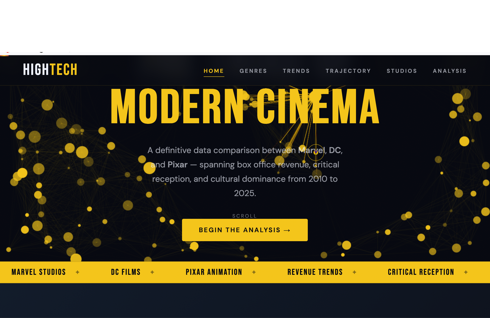
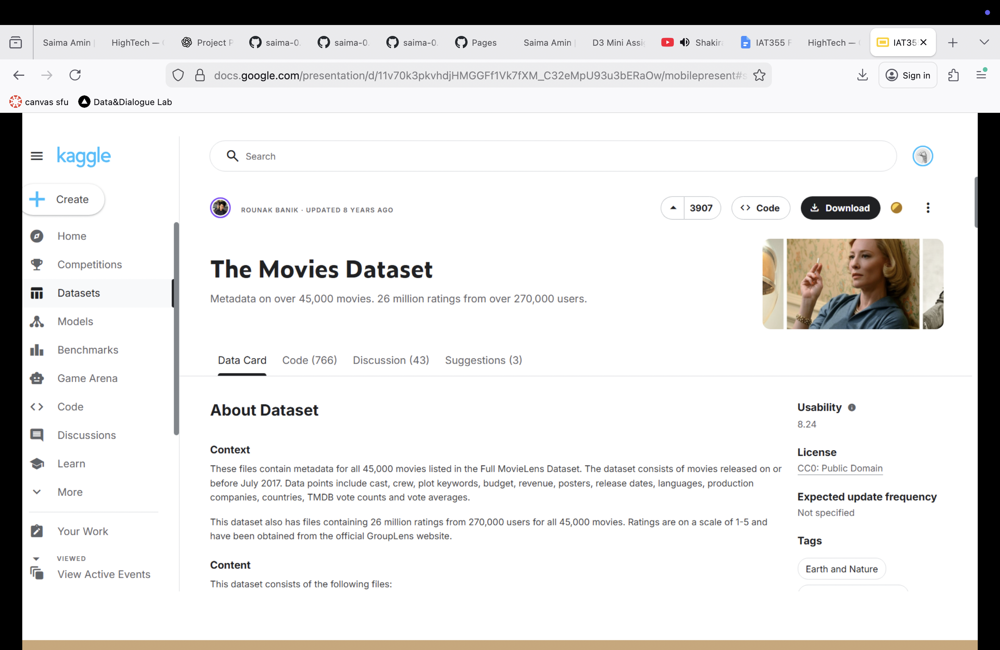
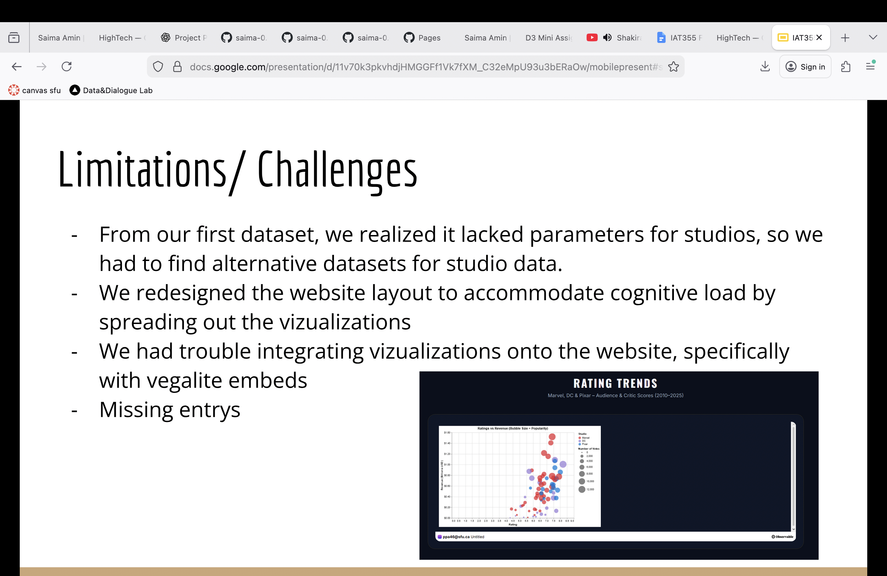

Project Overview
This project is an interactive data visualization website comparing Marvel, DC, and Pixar through box office revenue, ratings, popularity, and genre trends. The goal was to use visual storytelling to help users understand how major movie studios performed over time.

Project Info
- Type: School team project
- Course: IAT 355
- Timeframe: Spring 2026
- Tools: HTML, CSS, JavaScript, Observable, Kaggle datasets, data visualization
- Collaborators: Saima, Phumnawat, Anthony
- My role: UI/UX feedback analysis, visual clarity improvements, chart readability refinement, and case study reflection
Problem / Objective
The objective was to create a visualization website that helps users compare Marvel, DC, and Pixar. Through the website, we wanted to answer three main questions: which genres perform the best, which studio performs better, and how ratings relate to box office revenue.
This problem matters because movie performance is often judged through assumptions, such as studio bias, popularity, or the idea that high ratings always equal financial success. By visualizing the data, the project aimed to make these comparisons easier to understand for casual movie-goers, movie enthusiasts, and data-focused users.
Target Audience
The target audience included movie enthusiasts, cinephiles, data science students, and analysts. Movie fans could use the website to compare trends between major studios and genres. Data-focused users could see how raw movie datasets can be transformed into meaningful visual insights.
Research and Data Sources
We used multiple Kaggle datasets because one dataset alone did not include all the information needed for the project. The main dataset provided general movie metadata, while secondary datasets helped support TMDB metadata and box office revenue from 2000–2024.
Using more than one dataset helped us compare revenue, ratings, studios, genres, and popularity more effectively.

Design Iterations
Iteration 1: Colour Consistency
One feedback issue was that the studio colours were not consistent enough. DC and Pixar originally used similar blue tones, which made the charts harder to compare. To improve this, DC was changed to green and the tri-variate graph was updated to match the same studio colour system.
Iteration 2: Readability and Chart Size
Another revision focused on readability. The font size was increased from 16px to 20px, and the cumulative profit bar graph was enlarged so users could read and compare the data more easily.
Future Iteration
For a future version, I would add legend-based filtering so users could choose which studios to compare. I would also add stronger annotations for the 2023–2024 revenue drop and remove hover effects from elements that are not clickable.
Challenges and Limitations
One major challenge was that the first dataset did not include enough studio-specific information, so we had to find alternative datasets for studio data. We also had missing entries, which affected how complete some visualizations could be.
Another challenge was integrating the visualizations into the website, especially Vega-Lite embeds. We also redesigned the website layout to reduce cognitive load by spreading out the visualizations instead of overwhelming users with too much information at once.

Final Outcome
The final website became clearer and easier to follow. The improved colour system helped users compare studios more accurately, while the larger text and bar graph improved readability. The Covid-19 annotation was also useful because it explained a major revenue dip instead of leaving users to guess why the trend changed.
Takeaways and Future Improvements
I learned that data visualization is not only about making charts, but also about helping users understand a story. Clear colours, readable labels, useful annotations, and predictable interactions are important for making a good website.